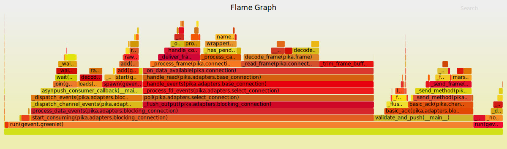

使用火焰图定位cpu性能问题是一种实用的手段，可以简单的从火焰图中看出性能的瓶颈点，cpu火焰图有on cpu off cpu 两种模式。前些日子发现有个python的性能问题需要分析，于是搜到profiler_online 这个开源项目
安装
pypi
pip install profiler_online
源码安装
git clone https://github.com/rfyiamcool/profiler_online.git
cd profiler_online
python setup.py install
用法
在项目引入:
1 2 3 4
| from gevent import monkey from profiler_online import run_profiler monkey.patch_all() run_profiler()
|
run_profiler支持三个参数:
1 2 3 4 5 6
| debug_config = { 'host': '127.0.0.1', 'port': 8080, 'tmp_path: '/tmp/debug' } run_profiler(**debug_config)
|
测试
打开浏览器 http://127.0.0.1:8080 或者wget http://127.0.0.1:8080，这样就可以显示正在运行服务的性能火焰图了.

profiler_online收集堆栈代码分析
profiler_online是通过signal.setitimer这个函数间隔0.005s收集一次堆栈 然后使用FlameGraph生成火焰图展示到浏览器web上面
1 2 3 4 5 6 7 8 9 10 11 12 13 14 15 16 17 18 19 20 21 22 23 24 25 26 27 28 29 30 31 32 33 34 35 36 37 38 39 40 41 42 43 44
| def start(self): self._started = time.time() try: signal.signal(signal.SIGVTALRM, self._sample) except ValueError: raise ValueError('Can only sample on the main thread') signal.setitimer(signal.ITIMER_VIRTUAL, self.interval, 0) def _sample(self, signum, frame): stack = [] while frame is not None: stack.append(self._format_frame(frame)) frame = frame.f_back stack = ';'.join(reversed(stack)) self._stack_counts[stack] += 1 signal.setitimer(signal.ITIMER_VIRTUAL, self.interval, 0) def _format_frame(self, frame): return '{}({})'.format(frame.f_code.co_name, frame.f_globals.get('__name__'))
|
其他python性能分析方式
Python 优化第一步: 性能分析实践
里面提到了vprof这个火焰图工具，这个比profiler_online强大不少，不仅可以收集cpu火焰图还可以收集内存火焰图，代码执行时间等，收集的粒度比profiler_online细了不少，不过相对的影响的性能也大了些。 本来想写vprof的，不过生成出来的火焰图太难用了～